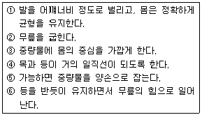
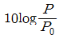
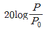
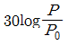
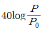
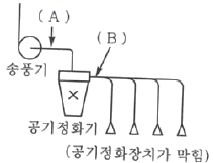

산업위생관리산업기사 (2013-08-18 기출문제)
1과목: 산업위생학 개론
1. 다음 중 일반적으로 근로자가 휴식 중일 때의 산소소비량(oxygen uptake)으로 가장 적절한 것은?
- 0.01L/min
- 0.25L/min
- 1.5L/min
- 3.0L/min
(정답률: 98%)

2. 우리나라 노출기준에서 충격소음의 1일 노출 횟수가 1,000회에 해당하는 충격소음의 강도는 얼마인가?
- 110dB(A)
- 120dB(A)
- 130dB(A)
- 140dB(A)
(정답률: 79%)
3. 400명의 근로자가 1일 8시간, 연간 300일을 근무하는 사업장이 있다. 1년 동안 30건의 재해가 발생하였다면 도수율은 얼마인가?
- 26.26
- 28.75
- 31.25
- 33.75
(정답률: 89%)
4. 유기용제의 생물학적 모니터링에서 유기용제와 소변 중 대사산물의 짝이 잘못 이루어진 것은?
- 톨루엔 : 마뇨산
- 크실렌 : 메탈마뇨산
- 스티렌 : 삼염화초산
- 노말핵산 : 2, 5-헥산디온
(정답률: 64%)
5. 다음 중 산업위생의 활동에서 처음으로 요구되는 활동은?
- 인지
- 평가
- 측정
- 예측
(정답률: 77%)
6. 다음 중 주관적 피로를 알아보기 위한 측정방법으로 가장 적절한 것은?
- CMI 검사
- 생리심리적 검사
- PPR 검사
- 생리적 기능 검사
(정답률: 57%)
7. 다음 중 ACGIH TLV의 적용상 주의사항으로 옳은 것은?
- 반드시 산업위생전문가에 의하여 적용되어야 한다.
- TLV는 안전농도와 위험농도를 정확히 구분하는 경계선이 된다.
- TLV는 독성의 강도를 비교할 수 있는 지표가 된다.
- 기존의 질병이나 육체적 조건을 판단하기 위한 척도로 사용될 수 있다.
(정답률: 84%)
8. 다음 중 산업안전보건법령상 보건관리자의 직무와 가장 거리가 먼 것은?
- 건강장애를 예방하기 위한 작업관리
- 직업성 질환 발생의 원인조사 및 대책수립
- 근로자의 건강관리, 보건교육 및 건강증진 지도
- 전체 환기장치 및 국소배기장치 등에 관한 설계 및 시공
(정답률: 85%)
9. 다음 중 작업의 종류에 따른 영양관리방안으로 가장 적절하지 않은 것은?
- 근육작업자의 에너지 공급은 당질을 위주로 한다.
- 저온작업자에게는 식수와 식염을 우선 공급한다.
- 중작업자에게는 단백질을 공급한다.
- 저온작업자에게는 지방질을 공급한다.
(정답률: 82%)
10. 다음 중 작업에 소모된 열량이 4,500kcal, 안정 시 열량이 1,000kcal, 기초대사량이 1,500kcal일 때 실동률은 약 얼마인가? (단, 사이또와 오시마의 경험식을 적용한다.)
- 70.0%
- 73.4%
- 84.4%
- 85.0%
(정답률: 69%)
11. 다음 중 자동차 배터리 공장에서 공기 중 납과 황산이 동시에 발생하여 근로자 제내로 유입될 경우 어떠한 상호작용이 발생하는가?
- 상가작용
- 독립작용
- 길항작용
- 상승작용
(정답률: 36%)
12. 젊은 근로자의 약한 손 힘의 평균은 45kp이고, 작업강도(%MS)가 11.1%일 때 적정작업 시간은? (단, 적정작업시간(초)=671,120×%MS-2.2222식을 적용한다.)
- 33분
- 43분
- 53분
- 63분
(정답률: 59%)
13. 다음 중 개인차원의 스트레스 관리에 대한 내용으로 가장 거리가 먼 것은?
- 건강검사
- 운동과 취미생활
- 긴장이완훈련
- 직무의 순환
(정답률: 85%)
14. 다음 중 “작업환경측정 및 지정측정기관 평가등에 관한 고시”에서 농도를 mg/m3으로 표시 할 수 없는 것은?
- 가스
- 분진
- 흄(fume)
- 석면
(정답률: 91%)
15. 다음 중 어깨, 팔목, 손목, 목 등 상자(upper limb)의 분석에 초점을 두고 있기 때문에 하체보다는 상체의 작업부하가 많이 부과되는 작업의 작업자세에 대한 근육부하를 평가하는 도구로 가장 적합한 것은?
- OWAS
- RULA
- REBA
- 3DSSPP
(정답률: 58%)
16. 다음 중 중량물 들기 작업의 구분동작을 순서대로 올바르게 나열한 것은?

- ①→②→③→④→⑤→⑥
- ①→③→②→④→⑤→⑥
- ③→①→②→④→⑤→⑥
- ③→①→②→⑤→④→⑥
(정답률: 65%)
17. 다음 중 산업피로의 증상으로 볼 수 없는 것은?
- 혈당치가 높아지고, 젖산이 감소한다.
- 호흡이 빨라지고, 혈액 중 이산화탄소량이 증가한다.
- 일반적으로 체온이 높아지나 피로 정도가 심해지면 오히려 낮아진다.
- 혈압은 초기에 높아지나 피로가 진행되면 오히려 낮아진다.
(정답률: 80%)
18. 다음 중 건강진단 결과 건강관리구분 “D1"의 내용으로 옳은 것은?
- 건강진단 결과 질병이 의심되는 자
- 건강관리상 사후관리가 필요 없는 자
- 직업성 질병의 소견을 보여 사후관리가 필요한자
- 일반 질병으로 진전될 우려가 있어 추적관찰이 필요한 자
(정답률: 66%)
19. 현재 우리나라에서 산업위생과 관련 있는 정부부처 및 단체, 연구소 등 관련기관이 바르게 연결된 것은?
- 환경부 - 국립환경연구원
- 고용노동부 - 환경운동연합
- 고용노동부 - 산업안전보건공단
- 보건복지부 - 국립노동과학연구소
(정답률: 87%)
20. 다음 중 직업성 지환의 발생원인으로 볼 수 없는 것은?
- 국소적 난방
- 단순 반복작업
- 격렬한 근육운동
- 화학물질의 사용
(정답률: 66%)
2과목: 작업환경측정 및 평가
21. 아세톤 2,000ppb는 몇 mg/m3인가? (단, 아세톤 분자량 : 58, 작업장 : 25℃, 1기압)
- 3.7
- 4.7
- 5.7
- 6.7
(정답률: 75%)
22. 작업환경 공기 중의 헴타논(TLV=50ppm)이 30ppm이고, 트리클로로엔틸렌 (TLV=50ppm)이 10ppm이며, 테트라클로로엔틸렌(TLV=50ppm)이 25ppm이다. 이러한 공기의 복합 노출지수는? (단, 각물질은 상기작용을 일으킨다.)
- 0.9
- 1.0
- 1.3
- 1.4
(정답률: 82%)
23. 0.01%(v/v)은 몇 ppb인가?
- 1,000
- 10,000
- 100,000
- 1,000,000
(정답률: 47%)
24. 다음 중 1차 표준으로 사용되는 기구는?
- Wet-test meter
- Rotameter
- Orifice meter
- Spirometer
(정답률: 68%)
25. 흡착제인 활성탄의 제한점으로 틀린 것은?
- 염화수소와 같은 저비점 화합물에 비효과적임
- 휘발성이 큰 저분자량의 탄화수소 화합물의 채취효율이 떨어짐
- 표면 반응성이 작은 케르캅탄과 알데이흐 포집에 부적합함
- 케톤의 경우 활성탄 표면에서 물을 포함하는 반응에 의해 파괴되어 탈착률과 안정성에 부적절함
(정답률: 47%)
26. 검지관 사용 시 단점이라 볼 수 없는 것은?
- 밀폐공간에서 산소부족 또는 폭발성 가스 측정에는 측정자 안전이 문제된다.
- 민감도 및 특이도가 낮다.
- 각 오염물질에 맞는 검지관을 선정해야 하는 불편이 있다.
- 색 변화가 선명하지 않아 주관적으로 읽을 수 있어 판독자에 따라 변이가 심하다.
(정답률: 69%)
27. 석면의 측정방법 중 X선 회절법에 관한 설명으로 틀린 것은?
- 값이 비싸고 조작이 복잡하다.
- 1차 분석에 사용하며, 2차 분석에는 적용하기 어렵다.
- 석면 포함 물질을 은막여과지에 놓고 X선을 조사한다.
- 고형시료 중 크리소타일 분석에 사용한다.
(정답률: 52%)
28. 소음의 음압수준(SPL)의 산정식으로 옳은 것은? (단, P:대상음의 음압, P0:기준음압)




(정답률: 80%)
29. 변이계수에 관한 설명으로 옳지 않은 것은?
- 통계집단의 측정값들에 대한 균일성, 정밀성 정도를 표현한다.
- 평균값의 크기가 0에 가까울수록 변이계수의 의의는 커진다.
- 단위가 서로 다른 집단이나 특성값의 상호산포도를 비교하는 데 이용될 수 있다.
- 변이계수(%)=(표준편차/산술평균)×100으로 계산된다.
(정답률: 52%)
30. 0℃, 1atm에서 H21.0m3는 273℃, 700mmHg상태에서 몇 m3인가?
- 약 2.2
- 약 2.7
- 약 3.2
- 약 3.7
(정답률: 43%)
31. 개인시료포집기를 사용하여 분당 1L로 6시간 측정한 후 여지를 산 처리하여 시험용액 100mL로 만든 후 시료액 5mL를 취해 정량분석하니 Pb이 2.5μ/5mL이었다면 작업환경 중 Pb의 농도(mg/m3)는?
- 0.434
- 0.364
- 0.202
- 0.139
(정답률: 28%)
32. 산과 염기에 관한 내용으로 틀린 것은?
- 산 : 양이온을 줄 수 있는 물질
- 염기 : 수소이온을 줄 수 있는 물질
- 강산 : 수용액에서 거의 다 (100%) 이온화하여 수소이온을 내는 물질
- 강염기 : 수용액에서 거의 다 (100%) 이온화하여 수산화이온을 내는 물질
(정답률: 55%)
33. 가스상 물질의 시료포집에 사용된 활성탄관의 탈착에 주로 사용하는 탈착용맥는? (단, 비극성 물질 기준)
- 질산
- 노말헥산
- 사염화탄소
- 이황화탄소
(정답률: 67%)
34. 입자의 비중이 1.5이고, 직경이 10㎛인 분진의 침강속도(cm/sec)는?
- 0.35
- 0.45
- 0.55
- 0.65
(정답률: 79%)
35. 중심주파수가 500Hz일 때 1/1 옥타브밴드의 주파수범위로 옳은 것은? (단, 하한주파수~상한주파수)
- 353~707Hz
- 367~735Hz
- 388~776Hz
- 397~794Hz
(정답률: 66%)
36. 어떤 작업장에서 톨루엔을 활성탄관을 이용하여 0.2L/min으로 30분 동안 시료를 포집하여 분석한 결과 활성탄관의 앞 층에서 1.2mg, 뒤 층에서 0.1mg씩 검출되었다. 탈착효율이 100%라고 할 때 공기 중 농도는? (단, 파과, 공시료는 고려하지 않음)
- 113mg/m3
- 138mg/m3
- 183mg/m3
- 217mg/m3
(정답률: 37%)
37. 유량, 측정시간, 회수율 및 분석 등에 의한 오차가 각각 15, 3, 9 및 5%일 때 누적오차(%)는?
- 약 18.4
- 약 20.3
- 약 21.5
- 약 23.5
(정답률: 83%)
38. ACGIH에서는 입자상 물질을 흡입성, 흉곽성, 호흡성으로 제시하고 있다. 호흡성 입자상 물질의 평균입경(폐포침착률 50%)은?
- 2㎛
- 4㎛
- 10㎛
- 15㎛
(정답률: 75%)
39. 직접포집방법에 사용되는 시료채취백에 대한 설명으로 옳은 것은?
- 시료채취백의 재질은 투과성이 커야 한다.
- 정확성과 정밀성이 매우 높은 방법이다.
- 이전 시료채취로 인한 잔류효과가 적어야 한다.
- 누출검사가 필요 없다.
(정답률: 47%)
40. 고유량 공기채취펌프를 수동 무마찰 거품관으로 보정하였다. 비눈방울이 300cm3의 부피까지 통과하는 데 12.5초가 걸렸다면 유량(L/min)은?
- 1.4
- 2.4
- 2.8
- 3.8
(정답률: 54%)
3과목: 작업환경관리
41. 저온에 의해 일차적으로 나타나는 생리적 영향으로 가장 적절한 것은?
- 말초혈관 확장에 른 표면조직 냉각
- 근육긴장의 증가
- 식욕 변화
- 혈압 변화
(정답률: 64%)
42. 작업환경관리대책 중 대치의 내용으로 적절하지 못한 것은?
- 세탁 시에 화재예방을 위하여 벤젠 대신 1,1,1-클로로에틸렌 사용
- TCE 대신 계면활성제를 사용하여 금속세척
- 작은 날개로 고속 회전시키는 것을 큰 날개로 저속 회전시킨다.
- 샌드블라스트 적용 시 모래를 대신하여 철가루 사용
(정답률: 55%)
43. 전신진동에서 공명현상이 나타날 수 있는 고유진동수(Hz)가 가장 낮은 인체부위는?
- 안구
- 흉강
- 골반
- 두개골
(정답률: 48%)
44. 작업환경 중에서 발생되는 분진에 대한 방진대책을 수립하고자 한다. 다음 중 분진발생방지대책으로 가장 적합한 방법은?
- 밀폐나 격리
- 물 등에 의한 취급물질의 습식화
- 방진마스크나 송기마스크에 의한 흡입 방지
- 국소배기장치 설치
(정답률: 66%)
45. 고압환경의 영향은 1차 가압현상과 2차 가압현상으로 구분된다. 다음 중 2차 가압현상과 가장 거리가 먼 것은?
- 산소중독
- 질소기포 형성
- 이산화탄소중독
- 질소마취
(정답률: 72%)
46. 방진마스크에 관한 설명으로 틀린 것은?
- 흡기, 배기저항은 낮은 것이 좋다.
- 흡기저항 상승률은 높은 것이 좋다.
- 무게중심은 안면에 강한 압박감을 주지 않는 위치에 있어야 한다.
- 안면의 밀착성이 커야 하며, 중량은 가벼운 것이 좋다.
(정답률: 79%)
47. 주물사업장 내 용해공정에서 습구흑구온도를 측정한 결과 자연습구온도 40℃, 흑구온도 42℃, 건구온도 41℃로 확인되었다면 습구온도지수(WBGT)는?
- 41.5℃
- 40.6℃
- 40.0℃
- 39.6℃
(정답률: 86%)
48. 빛의 양의 단위인 루멘(lumen)에 대한 설명으로 가장 정확한 것은?
- 1lux의 광원으로부터 단위입체각으로 나가는 광도의 단위이다.
- 1lux의 광원으로부터 단위입체각으로 나가는 휘도의 단위이다.
- 1촉광의 광원으로부터 단위입체각으로 나가는 조도의 단위이다.
- 1촉광의 광원으로부터 단위입체각으로 나가는 광속의 단위이다.
(정답률: 65%)
49. 피조사체 1g에 대하여 100erg의 에너지가 흡수되는 것을 나타내는 흡수선량 단위는?
- rad
- Ci
- rem
- sv
(정답률: 72%)
50. 방진재인 공기 스프링에 관한 설명으로 옳지 않은 것은?
- 부하능력이 광범위하다.
- 구조가 복잡하고, 시설비가 많다.
- 사용진폭이 적어 별도의 Damper가 필요 없다.
- 하중의 변화에 따라 고유진동수를 일정하게 유지할 수 있다.
(정답률: 72%)
51. 한랭에 의한 건강장애에 관한 설명으로 틀린 것은?
- 저체온증의 발생은 장시간 한랭폭로와 체열상실에 따라 발생하는 급성 중증장애이다.
- 피부의 급성 일과성 염증반응은 한랭에 대한 폭로를 중지하면 2~3시간 내에 없어진다.
- 3도 동상은 수포를 가진 광범위한 삼출성 염증이 일어나며, 이를 수포성 동상이라고도 한다.
- 참호족, 침수족은 지속적인 한랭으로 모세혈관벽이 손상되어 국소부위의 산소결핍이 일어나기 때문에 유발된다.
(정답률: 74%)
52. 음압도(SPL : Suond Pressure Level)가 80dB인 소음과 음압도가 40dB인 소음과의 음압(sound pressure)차이는 몇 배인가?
- 2배
- 20배
- 40배
- 100배
(정답률: 35%)
53. 작업장의 근로자가 NRR이 15인 귀마개를 착용하고 있다면 차음효과(dB)는?
- 2
- 4
- 6
- 8
(정답률: 75%)
54. 레이저광선에 의해 주로 장애를 받는 신체분위는?
- 생식기관
- 조혈기관
- 중추신경계
- 피부 및 눈
(정답률: 79%)
55. 전리작용의 유무에 따라 전리방사선과 비전리방사선으로 분류가 된다. 다음 중 전리방사선에 해당하는 것은?
- 극저주파
- 자외선
- 엑스선
- 라디오파
(정답률: 64%)
56. 적외선에 관한 설명으로 틀린 것은?
- 온도에 비례하여 적외선을 복사한다.
- 태양에너지의 52% 정도를 차지한다.
- 파장범위는 780nm~1mm로 가시광선과 마이크로파 사이에 있다.
- 대부분 생체의 화학작용을 수반한다.
(정답률: 62%)
57. 음압이 2N/m2일 때 음압수준(dB)은?
- 90
- 95
- 100
- 1⑤
(정답률: 68%)
58. 소음관리대책 중 소음발생원 대책과 가장 거리가 먼 것은?
- 소음발생기구에 방진고무 설치
- 음원방향의 변경
- 방음커버 설치
- 흠음덕트 설치
(정답률: 61%)
59. 판단력 저하, 두통, 귀울림, 매스꺼움, 기억상실, 전신탈진, 체온상승, 안면 창백등의 증상이 주로 발생하는 산소결핍 작업장 산소농도로 적절한 것은?
- 공기 중 산소농도가 16%인 작업장
- 공기 중 산소농도가 12%인 작업장
- 공기 중 산소농도가 8%인 작업장
- 공기 중 산소농도가 6%인 작업장
(정답률: 48%)
60. 자외선에 관한 설명으로 틀린 것은?
- 피부암(280~320nm)을 유발한다.
- 구름이나 눈에 반사되며, 대기오염의 지표이다.
- 일명 열선이라 하며, 화학적 작용은 크지 않다.
- 눈에 대한 영향은 270nm에서 가장 크다.
(정답률: 62%)
4과목: 산업환기
61. 다음 중 중력집진장치에서 집진효율을 향상시키는 방법으로 틀린 것은?
- 침강높이를 크게 한다.
- 수평도달거리를 길게 한다.
- 처리가스 배기속도를 작게 한다.
- 침강실 내의 배기기류를 균일하게 한다.
(정답률: 61%)
62. 다음 중 덕트 내의 공기흐름 및 속도압에 관한 내용으로 틀린 것은?
- 덕트의 면적이 일정하면 속도압도 일정하다.
- 속도압은 송풍기 앞에서 음의 부호를 갖는다.
- 덕트 내 공기흐름은 대부분 난류영역에 속한다.
- 일반적으로 덕트 중심부의 공기속도가 최대이다.
(정답률: 58%)
63. 1,830m 고도에서의 압력이 608mmHg일 때 공기밀도는 약 몇 kg/m3인가? (단, 1기압, 21℃일 때 공기의 밀도는 1.2kg/m3이다.)
- 0.66
- 0.76
- 0.86
- 0.96
(정답률: 35%)
64. 환기시스템에서 공기유량이 0.2m3/s, 덕트직경이 9.0cm, 후드 유입손실계수가 0.40일 떄 후드정압(mmH2O)은 약 얼마인가?
- 42
- 55
- 72
- 85
(정답률: 24%)
65. 덕트의 장변이 40cm, 단변이 25cm인 장방형 덕트의 상당직경(cm)은 약 얼마인가?
- 30.8
- 28.8
- 35.8
- 38.8
(정답률: 52%)
66. 다음 중 송풍기로 공기를 불어줄 때 공기속도가 덕트 직경의 몇 배 정도 거리에서 1/10로 감소하는가?
- 10배
- 20배
- 30배
- 40배
(정답률: 65%)
67. 다음 중 국소배기장치를 유지ㆍ관리하기 위한 피루 측정기와 관련이 없는 것은?
- 절연저항계
- 고도측정계
- 열선풍속계
- 스모크테스터
(정답률: 50%)
68. 다음 중 송풍기의 회전수를 2배 증가시키면 동력은 몇 배로 증가하는가?
- 2배
- 4배
- 8배
- 16배
(정답률: 59%)
69. 다음 중 환기장치에서의 압력에 대한 설명으로 틀린 것은?
- 전압은 흐름의 방향으로 작용한다.
- 동압은 단위체적의 유체가 갖고 있는 운동에너지이다.
- 동압은 때로는 저항입력 또는 마찰압력이라고도 한다.
- 정압은 단위체적의 유체가 압력이라는 형태로 나타내는 에너지이다.
(정답률: 55%)
70. A강의실에 학생들이 모두 퇴실한 직후인 오후 5시에 측정한 공기 중 CO2 농도는 1,200ppm이었고, 강의실 빈 상태로 2시간이 경과한 오후 7시에 측정한 CO2농도는 400ppm이었다면 강의실의 시간당 공기교환 횟수는 얼마인가? (단, 이때 외부공기 중의 CO2농도는 330ppm이었다.)
- 1.26
- 1.36
- 1.46
- 1.56
(정답률: 47%)
71. 다음 중 후드에서 포위식이 외부식에 비하여 효과적인 이유로 볼 수 없는 것은?
- 제어풍량이 적기 때문이다.
- 유해물질이 포위되기 때문이다.
- 플랜지가 부착되어 있기 때문이다.
- 영향을 미치는 외부기류를 사방면에서 차단되기 때문이다.
(정답률: 55%)
72. 다음 중 전체환기를 적용하기에 가장 적합하지 않은 곳은?
- 오염물질의 독성이 낮은 곳
- 오염물질의 발생원이 이동하는 곳
- 오염물질 발생량이 많고 널리 퍼져있는 곳
- 작업공정상 국소배기장치의 설치가 불가능 한 곳
(정답률: 65%)
73. 관의 내경이 200mm인 직관에50m3/min의 공기를 송풍할 때 관내 기류의 평균유속(m/s)은 약 얼마인가?
- 26.5
- 47.5
- 50.4
- 60.0
(정답률: 50%)
74. 21℃, 1기압에서 어떤 유기용제가 시간당 1L씩 증발하고 있다. 이 물질의 분자량이 78이고, 비중이 0.881이며, 허용기준이 100pp일 떄 전체환기 시 필요한 환기량(m3/min)은 약 얼마인가? (단, 안전계수는 4로 한다.)
- 116
- 182
- 235
- 274
(정답률: 54%)
75. 1기압에서 직경 20cm인 덕트에 동점성계수 2×10-4m2/s인 기체가 10m/s로 흐를 때 레이놀즈수는 약 얼마인가?
- 1,000
- 2,000
- 4,000
- 10,000
(정답률: 35%)
76. 다음 그림과 같이 국소배기장치에서 공기정화기가 막혔을 경우 정압의 절대값은 이전에 측정했을 때에 비해 어떻게 변하는가?

- A : 감소, B : 증가
- A : 증가, B : 감소
- A : 감소, B : 감소
- A : 거의 정상, B : 증가
(정답률: 64%)
77. 다음 중 오염공기를 후드로 흡인하는 데 필요한 속도를 무엇이라 하는가?
- 반송속도
- 제어속도
- 면속도
- 슬로트속도
(정답률: 75%)
78. 다음 중 후드의 성능불량 원인이 아닌 경우는?
- 제어속도가 너무 큰 경우
- 송풍기의 용량이 부족한 경우
- 후드 주변에 심한 난기류가 형성된 경우
- 송풍관 내부에 분진이 과다하게 퇴적되어 있는 경우
(정답률: 56%)
79. 공중에 매달린 직사각형 외부식 후드의 개구면적이 4m2이고, 발생원의 포착속도가 0.3m/s이다. 발생원은 후드 개구면으로부터 2m 거리에 위치하고 있다면 이때 필요환기량(m2/min)은 약 얼마인가?
- 132
- 486
- 792
- 945
(정답률: 43%)
80. 다음 중 송풍기의 정압효율이 좋은 것부터 올바르게 나열한 것은?
- 방사형＞다익형＞터보형
- 터보형＞다익형＞방사형
- 방사형＞터보형＞다익형
- 터보형＞방사형＞다익형
(정답률: 64%)